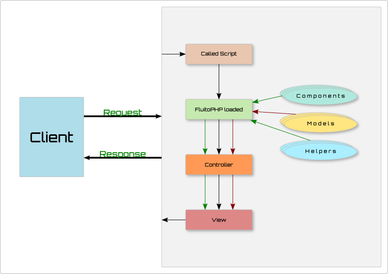

FluitoPHP just like any other framework works on a MVC (Model-View-Controller) structure and helps in aiding developers with the web development. But the more important aspect of FluitoPHP is the speed it provides with the minimal calls and recursions that hamper the web application processing time.
FluitoPHP does have a flow when client interacts the application. It calls the web server which calls the index script which further processes the request. The image of the flow will help you better understand the flow of the framework.

It's not just the index.php, you can integrate this framework with your custom script to make use of the components, helpers and models of this framework. When you integrate this framework with a custom script the flow diagram is a bit different, controller and view goes out of the chart and your custom flow comes in flow. A brief of the custom usage of the framework will be discussed in detail further.
To understand this framework further and design a new application head over to Quick Start Guide.